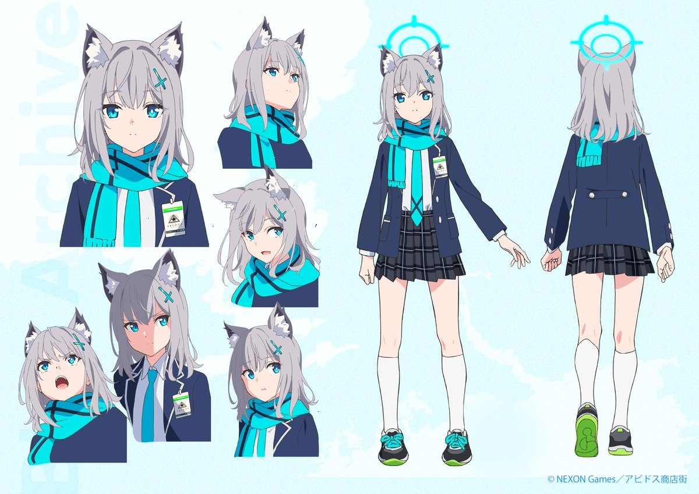
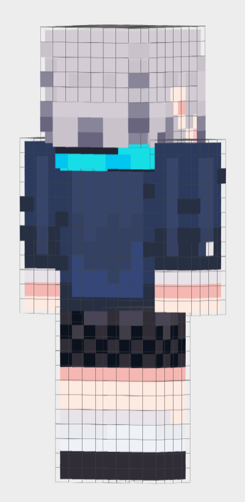
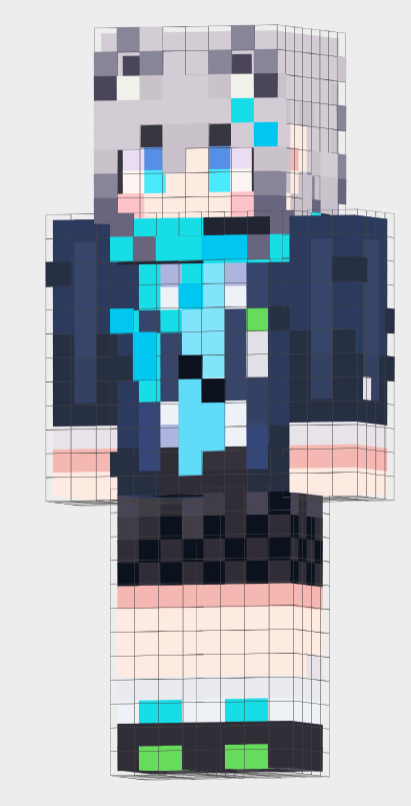
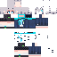

ブルーアーカイブより砂狼シロコを作ってみよう
やっておくといいこと
今回は砂狼シロコを作ります。
|
 |
アニメ版のシロコの資料絵になります。
枚数こそ1枚だけですが、アングルが多く3Dモデルにするときの参考にしやすく、
また色数が少ないのでスポイトした色も扱いやすいです。
模範解答(立ち絵2枚)
|
 |
 |
ー発展編ー より豪華に見せるためのテクニック
今回のシロコは少し情報量の多いキャラクターとなっています。
『スカート・制服上・マフラー・ケモ耳・ネクタイ・髪の毛・etc…』など、
情報量が増えるほどパーツを圧縮して表現する技術が求められるようになります。
他の制作者様がどうやってシロコを表現しているか、資料の確認もしてみてください。
スキンデータ
|
 |